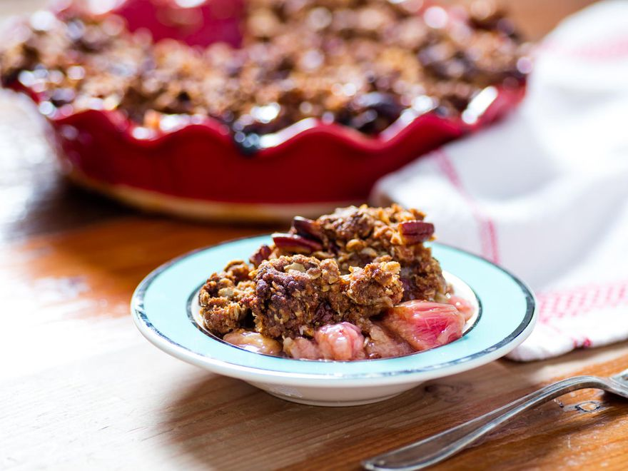

Rhubarb Crisp Recipe

Descripion
Here's one last recipe for the Odin Project. It's a baked crisp because baked goods are delicious and I don't think I can actually bake, even if I tried.
Ingredients
For the Topping:
-
5 ounces light brown sugar (about 2/3 cup, packed; 140g)
-
3 3/4 ounces whole wheat flour (about 3/4 cup, spooned; 105g)
-
4 ounces old-fashioned rolled oats (about 1 1/3 cups; 115g)
-
1 1/2 teaspoons ground cinnamon
-
1 teaspoon whole anise seed (optional)
-
1 teaspoon Chinese five-spice powder
-
1/4 teaspoon (1g) Diamond Crystal kosher salt; for table salt, use half as much by volume or use the same weight
-
5 ounces unsalted butter (10 tablespoons; 140g), soft but cool, about 68°F (20°C)
-
5 ounces raw pecan pieces (about 1 cup; 140g)
For the Filling:
-
2 3/4 pounds rhubarb, cut into 3/4-inch pieces (about 11 cups; 1.25kg), from around eighteen 24-inch stalks (3 pounds; 1.35kg)
-
10 1/2 ounces sugar (about 1 1/2 cups; 300g)
-
2 1/2 ounces tapioca flour (about 2/3 cup; 75g), such as Bob’s Red Mill
-
2 ounces elderflower liqueur or water (1/4 cup; 55g)
-
3/4 teaspoon (3g) Diamond Crystal kosher salt; for table salt, use half as much by volume or use the same weight
-
1/4 teaspoon baking soda
To Serve (optional):
Steps
-
For the Topping: Combine brown sugar, whole wheat flour, rolled oats, cinnamon, anise seed (if using), five-spice powder, salt, and butter in the bowl of a stand mixer fitted with a paddle attachment. Mix on low speed to form a thick dough, about 5 minutes. Alternatively, this can be done by hand. Toss in pecans, transfer to a zip-top bag, and refrigerate until needed, up to 1 month.
-
For the Filling: Adjust oven rack to lower-middle position and preheat to 400°F (200°C). In the same bowl from the stand mixer (no need to wash), combine half the prepared rhubarb (about 5 1/2 cups; 22 ounces; 620g), sugar, tapioca flour, elderflower liqueur or water, and salt with a flexible spatula; the mixture will be extremely dry. Transfer to a 7- by 11-inch baking dish or 9-inch deep-dish pie pan, sprinkling any remaining sugar/starch on top, and cover with foil. Place on a foil- or parchment-lined half-sheet pan and bake until rhubarb is wilted and juicy, about 30 minutes. Meanwhile, transfer remaining fruit to the same bowl.
-
To Finish: Remove baking dish from oven, discard foil, and sprinkle with baking soda. Stir carefully with a heat-resistant spatula until juices begin to fizz. Pour over remaining rhubarb and fold to combine, then return to baking dish. Top with handfuls of prepared streusel, flattening each addition into a thin sheet to achieve even coverage. Continue baking until crisp is bubbling in the very center, about 35 minutes more. (The time will vary dramatically depending on the exact dimensions and material of your baking dish.)
-
Cool at least 30 minutes before serving, as the filling will be dangerously hot and extremely runny at first. The crisp will thicken as it cools to room temperature. If you like, serve à la mode or with dollops of strawberry or brown sugar whipped cream. Wrapped in foil, the crisp will keep 3 days at room temperature.